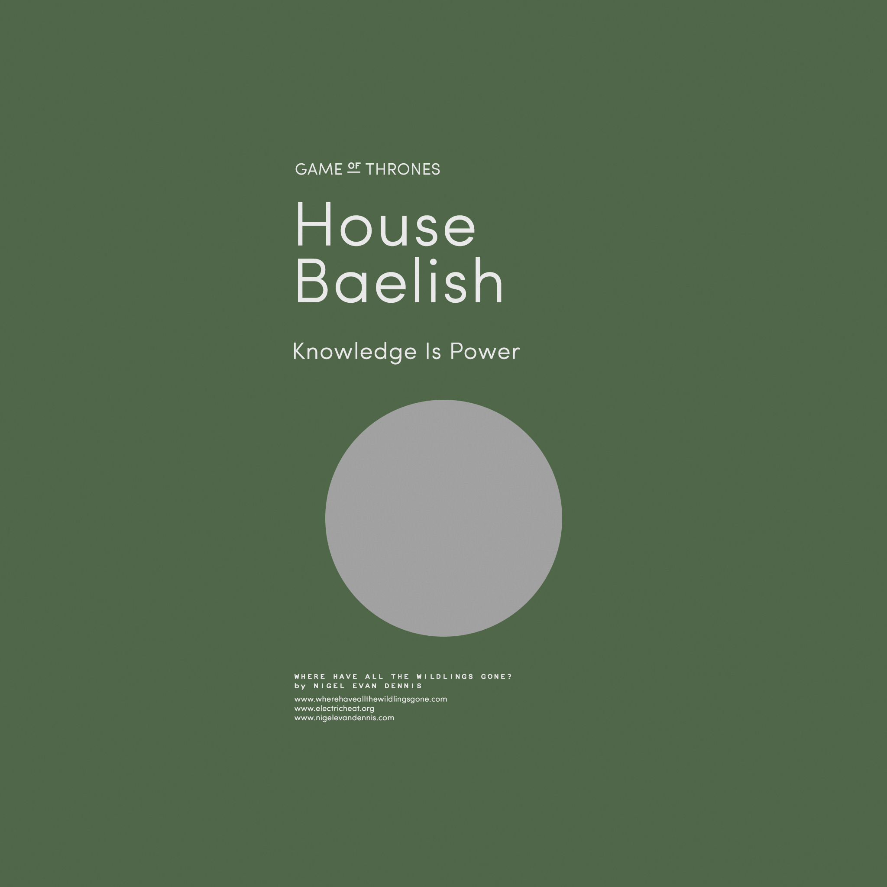

Les Arryn, une des lignées les plus anciennes et les plus pures de la noblesse andale, furent rois de la Montagne et du Val durant près de six mille ans, jusqu’à ce qu’ils reconnaissent comme souverain Aegon le Conquérant, qui en firent les seigneurs suzerains du Val d'Arryn
Lieu: Les Eyrié (été)
Les Portes de la Lune (hiver)
Devise : « Aussi haute qu'Honneur »
Personalités :
Jon Arryn
Robert Arryn
Baelish

La maison Baelish est une petite maison de petite noblesse des Quatre Doigts dans le Val d'Arryn.
Lieu:
Devise :
Personalités :
Petyr Baelish
Baratheon
La maison Baratheon est la maison suzeraine des terres de l'Orage et réside à Accalmie. C'est aussi l'actuelle dynastie régnante depuis que Robert Baratheon est devenu roi des Sept Couronnes après la rébellion qui a mis fin à la dynastie de la maison Targaryen.
Lieu: Accalmie, Peyredragon, Port-Réal
Devise : « Nôtre est la fureur »
Personalités :
Robert Baratheon
Joffrey Baratheon
Tommen Baratheon
Myrcella Baratheon
Bolton
La maison Bolton demeure à Fort-Terreur. Ses membres ont une réputation de cruauté et de ruse. Les légendes les plus noires prêtent aux anciens Bolton l'habitude de se couvrir de manteaux faits du cuir de leur ennemis. Ces pratiques auraient été abolies sous l'influence de la maison Stark. Il est même dit qu’il existe une chambre à Fort-Terreur où les peaux des ennemis des Bolton sont exposées.
Lieu:
Devise : « Our Blades are Sharp »
Personalités :
Roose Bolton
Ramsay Bolton
Cassel
La maison Cassel est très proche des Stark de Winterfell.
Lieu:
Devise :
Personalités :
Martyn Cassel
Jory Cassel
Clegane
La maison Clegane est au service des Lannister depuis que l'aïeul Clegane, maître piqueux à Castral Roc, fut fait chevalier fieffé pour avoir, un automne, sauvé la vie de lord Tytos Lannister qui s’était retrouvé entre une lionne des montagnes et sa proie. Trois de ses chiens étant morts ce jour là, l’emblème de la maison Clegane représente trois limiers sur un champ jaune d'automne. Ses deux petits-fils Gregor et Sandor sont les seuls membres actuels connus de cette maison. Les terres de la maison Clegane sont situées au sud-est de Port-Lannis.